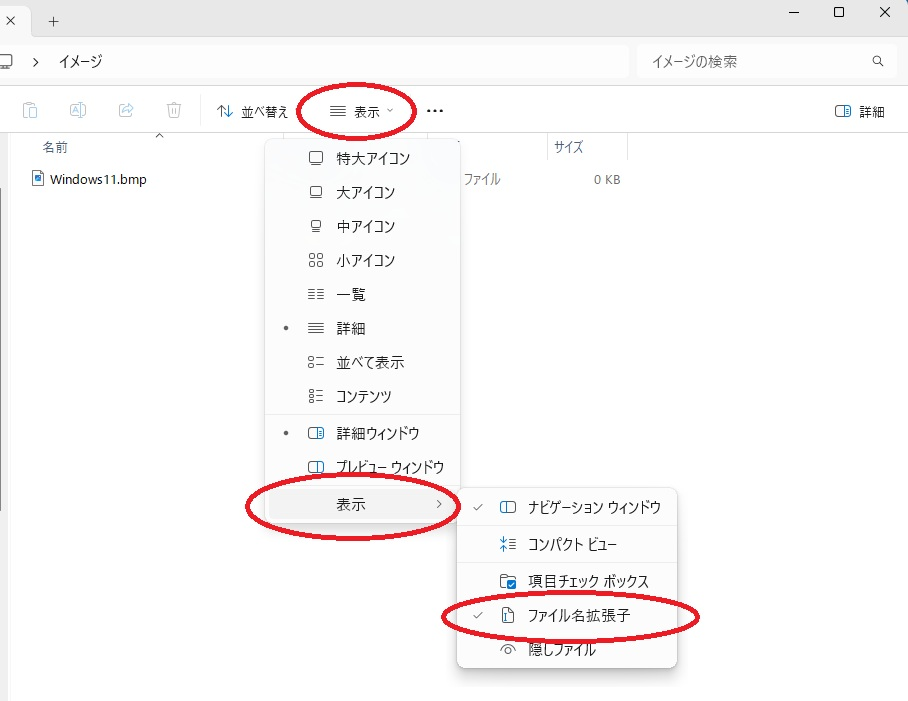
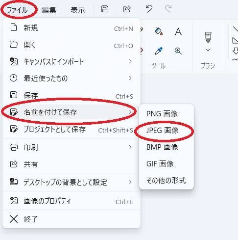

JPEGとPNG、どっちで保存する？画像形式の使い分け
「送れない」「開けない」は、形式を変えれば大体解決します
「写真を送ろうとしたら、形式が違うと言われてしまって」
教室で、ときどき聞く相談です。
写真も画像も、パソコンの中では「ファイル」ですが、実は種類（形式）がいくつかあって、送り先によっては「この形式は受け付けられません」と止められてしまいます。
逆に、ネットで保存した画像が開けなかったり、Wordに貼れなかったりするのも、だいたい形式が原因です。
形式の名前はたくさんありますが、初心者がまず覚えるのは2つで足ります。
JPEGとPNGです。
この記事では、JPEGとPNGの使い分けと、Windowsの標準機能だけで形式を変える方法を紹介します。
専用のソフトは要りません。
迷ったら、JPEGにしておけば大体大丈夫です。
写真を送る場面では、まずこれが合言葉です。
PNGが要る場面は、この記事の早見表で確認できます。
以前、受講生の方が、スマホで撮った自分の写真を履歴書に使おうとして、教室で止まってしまったことがあります。
自宅のパソコンでは写真を選べたのに、教室のパソコンでは、写真のファイルが一覧に出てこない。
「同じ写真なのに、なんでですか」
形式を見ると、HEICになっていました。
iPhoneで撮ると、初期設定ではこの形式で保存されます。
開けるパソコンと、開けないパソコンがある形式です。
その場は、JPEGに変換してから履歴書に貼り直して、事なきを得ました。
「自分のパソコンで開けたから、大丈夫だと思っていました」
提出する書類は、相手のパソコンで開くものです。
送る用の写真はJPEGにしておく。
そのひと手間を知っているかどうかが、応募の現場では効いてきます。
そもそも「画像の形式」とは
画像の形式は、ファイル名の後ろに付いている「.jpg」や「.png」という部分で見分けます。
この後ろの部分を拡張子（かくちょうし）と言います。
拡張子が見えない場合は、エクスプローラー（フォルダを開いた画面）の[表示]から[ファイル名拡張子]にチェックを入れると表示されます。
画面の各部の名前が分からなくなったときは、Windowsの基本操作もあわせてどうぞ。

▲ ファイル名の後ろの .jpg や .png が、その画像の形式です
形式によって、写真向き・図向きといった得意分野と、ファイルの大きさが変わります。
だから「送れない」「開けない」が起きるのです。
ファイルとフォルダの整理の基本は、ファイルとフォルダの管理で紹介しています。
早見表：用途で選ぶ
細かい違いの前に、用途で覚えるのが早いです。
| 用途 | 形式 |
|---|---|
| 写真をメールやフォームで送る | JPEG（.jpg） |
| 履歴書・応募書類の証明写真 | JPEG（指定がある場合は指定どおり） |
| 画面のスクリーンショット | PNG（.png） |
| 図・表・ロゴなどの画像 | PNG（.png） |
| 「この形式は対応していません」と言われた | JPEGに変える |
| iPhoneの写真が開けない・選べない（HEIC） | JPEGに変える |
| ネットで保存したら開けない画像だった | JPEGかPNGに保存し直す |
スクリーンショットがPNGなのは、Windowsの切り取りツール（Snipping Tool）がPNGで保存するからです。
そのまま送っても問題ありません。
JPEGとPNGの違い
JPEGは、写真向き
写真のように色の変化が多い画像が得意で、ファイルの大きさが小さくなります。
メールで送ったり、フォームに上げたりする写真は、JPEGが基本です。
弱点は、保存し直すたびに少しずつ画質が落ちることです。
元の写真は残しておいて、送る用のコピーを作って変換するのがおすすめです。
PNGは、文字や図向き
スクリーンショットや図のように、文字や線が入った画像でも、にじまずくっきり保存できます。
保存し直しても画質は落ちません。
弱点は、写真をPNGにすると、ファイルがとても大きくなることです。
写真をメールで送るときにPNGのままだと、大きすぎて送れないことがあります。
ほかの形式も、たまに見かけます
GIF（ジフ）は、短いアニメーションの画像で使われる形式です。
自分で作ることはあまりありませんが、ネットで見かける動く画像は、だいたいこれです。
BMP（ビットマップ）は、昔からある形式で、画質はいいのですがファイルが非常に大きくなります。
仕事で「BMPで」と指定されたときだけ、ペイントの[名前を付けて保存]で選べば大丈夫です。
どちらも、普段の使い分けに入れる必要はありません。
「JPEGとPNG以外もある」ことだけ知っていれば十分です。
写真はJPEG、画面や図はPNG。送るときに迷ったらJPEG。
形式を変える方法（ペイントでできます）
形式を変えるのに、特別なソフトは要りません。
Windowsに最初から入っている「ペイント」でできます。
- 画像ファイルを右クリックして、[プログラムから開く]→[ペイント]を選びます（ペイントを起動して、画像をドラッグしても開けます）
- ペイントで画像が開いたら、[ファイル]→[名前を付けて保存]を選びます
- JPEG画像かPNG画像を選んで、保存先とファイル名を決めて保存します

▲ ペイントの[ファイル]→[名前を付けて保存]で、JPEG画像かPNG画像を選びます
元の画像はそのまま残ります。
変換した新しいファイルが別にできるので、間違えてもやり直せます。
たとえば、PNGのスクリーンショットをJPEGで送りたいときは、ペイントで開いて[名前を付けて保存]→[JPEG画像]を選ぶだけです。
保存先は、デスクトップやドキュメントなど、後で見つけやすい場所にしてください。
ファイル名も「画面」や「写真」のような元の名前のままだと、変換前と見分けがつきにくくなります。
「〇〇_JPEG」のように、変換したことが分かる名前を付けておくと、送り間違いが減ります。
なお、メニューの名前や場所は、Windowsやアプリのバージョンで変わる場合があります。
近い名前の項目を探してみてください。
スクリーンショットを送るときのコツ
仕事の連絡で「画面の写真を送ってください」と言われたら、スクリーンショットを撮って送るのが基本です。
形式はPNGのままで問題ありません。
ただ、画面全体をそのまま撮ると、文字が小さくて相手が読めないことがあります。
切り取りツール（Snipping Tool）で、見せたい範囲だけを指定して撮ると、相手にも読みやすくなります。
もう一つ、送る前の注意です。
スクリーンショットには、別のウィンドウや個人の情報が写り込むことがあります。
メールアドレスや名前、他の資料が写っていないか、送る前に一度見直してください。
形式と同じくらい、現場で大事な確認です。
困りごと別：よくある3つ
ネットで保存した画像が開けない・Wordに貼れない
ブラウザで画像を保存すると、「WebP（ウェッピー）」という形式で保存されることがあります。
比較的新しい形式で、開けるアプリと開けないアプリがあるため、Wordに貼れない、画像ビューアーで開けない、といったことが起きます。
対処は、この記事の変換方法そのままです。
ペイントで開いて、JPEGかPNGで保存し直せば、普通の画像として使えるようになります。
新しいWordではそのまま貼れる場合もありますが、困ったら保存し直しが確実です。
なお、環境によってはペイントでWebPを開けないこともあります。
その場合は、画像をブラウザで開いて表示し、切り取りツール（Snipping Tool）で撮り直して保存する方法もあります。
写真が大きくて、メールで送れない
写真のファイルが大きすぎると、メールに添付できないことがあります。
まず確認したいのは形式です。
PNGになっていたら、JPEGに変えるだけでかなり小さくなります。
それでも大きいときは、ペイントの[サイズ変更]で、割合を小さく（たとえば50％）してから保存する方法もあります。
元の写真は残して、送る用に小さくしたコピーを作るのが基本です。
iPhoneの写真（HEIC）が開けない・選べない
iPhoneの写真の形式「HEIC」は、パソコンによって開ける・開けないが分かれる、少し特殊な形式です。
次の節「HEICは、開けるパソコンと開けないパソコンがある」で、まとめて説明します。
HEICは、開けるパソコンと開けないパソコンがある
iPhoneで撮った写真は、初期設定では「HEIC（ヘイク）」という形式で保存されます。
写真の容量が小さくなる、比較的新しい形式です。
この形式のややこしいところは、パソコンの環境によって、開ける・開けないが分かれることです。
HEICを読むための部品（拡張機能）が入っているパソコンでは、写真を表示したり、Wordにそのまま挿入したりできます。
入っていないパソコンでは、挿入の画面で写真が選べなかったり、貼っても表示されなかったりします。
実際、この記事を作るときに講師のパソコン（Word 2021）で試すと、HEICの写真はそのまま挿入できました。
でも、それは「そのパソコンでは開けた」というだけの話です。
同じ履歴書を、別のパソコンで開いたら写真が出ない、ということが起こり得ます。
だから、提出する写真はJPEGにしておく
応募フォームでは、HEICを受け付けず、JPEGを指定されることがよくあります。
履歴書のような提出書類も、相手のパソコンで確実に開けることが大事です。
実務の結論はシンプルです。
送る用・提出用の写真は、先にJPEGに変換しておく。
方法は、環境に合わせて3つあります。
- HEICが開けるパソコンなら、ペイントで開いてJPEGで保存し直す
- 開けないパソコンなら、iPhoneの転送設定（[設定]→[アプリ]→[写真]→[MacまたはPCに転送]を「自動」。古いiOSでは[設定]→[写真]の中）にして、ケーブルで取り込むと、JPEGで届くことがあります
- 今後撮る写真は、iPhone側で[設定]→[カメラ]→[フォーマット]を「互換性優先」にすると、最初からJPEGで撮れます
写真を送る前に確認する3つ
形式を変えたら、送る前にこの3つだけ確認してください。
送信エラーで戻ってくる手間が、だいぶ減ります。
- 形式：ファイル名の後ろが、指定どおり（多くは .jpg）になっているか
- 大きさ：ファイルの大きさが、指定の上限（〇MBまで）を超えていないか。右クリック→[プロパティ]で確認できます
- 中身：変換したファイルを一度開いて、正しい写真・画像かどうか確かめる。似た名前のファイルを送り間違える事故は、現場でもよくあります
特に3つ目は大事です。
変換すると似た名前のファイルが増えるので、送る前に開いて確認する癖をつけてください。
仕事・応募では「指定」を先に確認する
応募フォームや履歴書の写真では、形式や大きさが指定されていることがよくあります。
「JPEG形式、〇MBまで」のように書かれているので、送る前に必ず確認してください。
指定と違う形式で送ると、受け付けられなかったり、写真が表示されなかったりします。
逆に、指定がJPEGなら、この記事の方法で変換してから送れば大丈夫です。
証明写真のデータも、多くはJPEGで用意します。
写真店や証明写真機でデータを受け取ったときは、形式と大きさを確認して、応募先の指定に合っているか見てから送ってください。
指定と違う場合は、この記事の方法で変換できます。
仕事の現場でも同じで、資料の画像を「PNGでください」「JPEGで送って」と言われることがあります。
言われた形式で保存し直せる、というだけで、現場では十分に役立つスキルです。
よくある質問
拡張子が表示されなくて、形式が分からない
エクスプローラーの[表示]から[ファイル名拡張子]にチェックを入れると、ファイル名の後ろに.jpg や.png が表示されます。それでも分からない場合は、ファイルを右クリックして[プロパティ]を開くと、ファイルの種類が確認できます。
写真をPNGで送ったら、重いと言われた
写真はPNGだと大きくなりがちです。ペイントで開いて、JPEGで保存し直してから送り直してください。画質は、画面で見る分にはほとんど分からない程度しか変わりません。
変換したのに、フォームで受け付けてもらえない
形式が合っていても、ファイルの大きさが上限を超えていると受け付けられません。[プロパティ]で大きさを確認して、上限を超えている場合は、ペイントの[サイズ変更]で小さくしてから保存し直してください。
JPEGに変換したら、画質が落ちた気がする
JPEGは、保存するたびに少しずつ劣化する形式です。編集を繰り返す作業では、元の画像（PNGや元の写真）を残しておいて、最後に送る用だけJPEGにするのがおすすめです。
まとめ｜迷ったらJPEG、画面や図はPNG
- 画像の形式は、ファイル名の後ろの.jpg や.png で見分ける
- 写真を送るならJPEG。スクリーンショットや図はPNG
- 「対応していません」と言われたら、JPEGに変える
- 形式の変換は、ペイントの[名前を付けて保存]でできる。元の画像は残る
- 開けない画像（WebP・HEIC）も、JPEGかPNGに保存し直せば使える
- 応募や仕事では、送る前に形式の指定を確認する
形式で止まるのは、操作が分からないからではなく、形式の存在を知らなかっただけ、ということがほとんどです。
知っていれば、その場で変えて送れます。
この記事について
この記事は、パソコンスクールのインストラクターとして、就職を目指す方や働き始めた方を指導する中で、受講生から聞いた話と、Microsoft・Appleの公式情報をもとに作成しました。
参考にした情報と確認日（2026年11月22日）：Apple サポート「HEIF/HEIC形式のメディアについて」、Microsoft サポート（ペイント・Snipping Toolの案内）。
メニューや設定の名称は、Windowsやアプリのバージョンで変わる場合があります。
最新の情報は、公式の案内で確かめてください。
運営者情報は運営者情報のページをご覧ください。